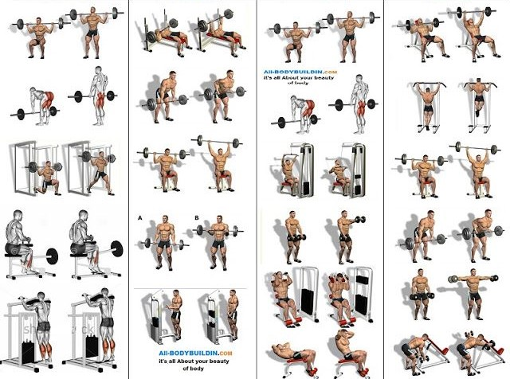

Weighted exercises are a great way to build strength, muscle mass, and overall fitness. Here are some popular weighted exercises you can incorporate into your workout routine:
Barbell Squats: Hold a barbell across your upper back and shoulders, then squat down by bending your knees and lowering your body until your thighs are parallel to the ground. Push through your heels to return to the starting position.
Deadlifts: Stand with a barbell on the floor in front of you, feet hip-width apart. Bend at your hips and knees to grip the barbell, then lift it by extending your hips and knees until you're standing upright. Lower the barbell back down with control.
Bench Press: Lie on a flat bench with a barbell above your chest, arms fully extended. Lower the barbell to your chest, then press it back up to the starting position, keeping your elbows tucked in.
Dumbbell Rows: Stand with a dumbbell in each hand, palms facing your body. Bend at your hips and knees, keeping your back straight. Pull the dumbbells up towards your torso, squeezing your shoulder blades together, then lower them back down with control.